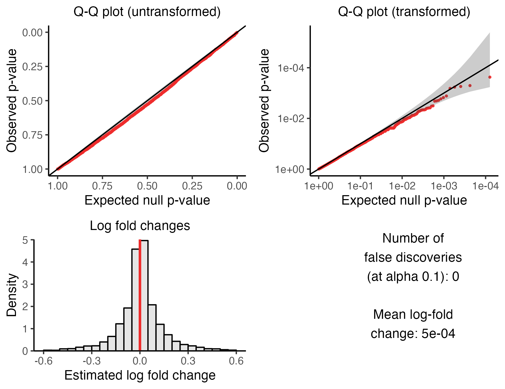
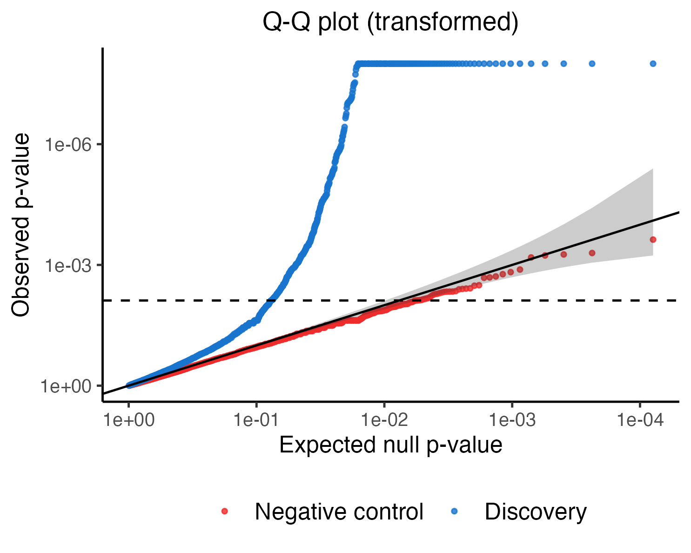
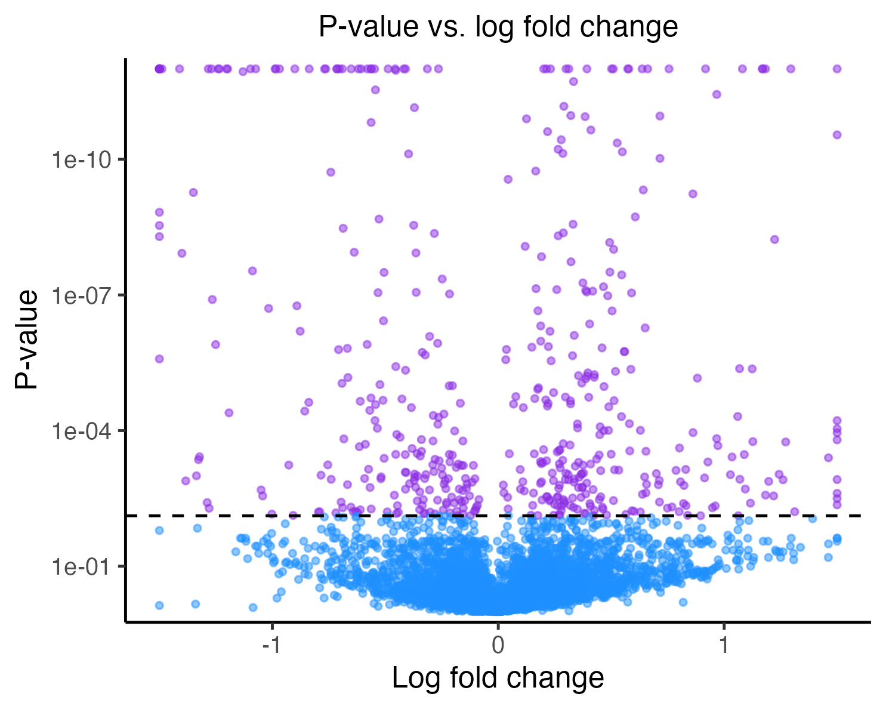

lowmoi_tutorial.RmdThis tutorial illustrates application of sceptre to an
example low multiplicity-of-infection (MOI) single-cell CRISPR screen
dataset. The example dataset that we examine is taken from the paper
“Characterizing the molecular regulation of inhibitory immune
checkpoints with multimodal single-cell screens” by Papalexi et al.,
2021. The authors of this study perturbed 26 genes hypothesized to play
a role in the expression of immune checkpoint molecules and measured the
effects of these perturbations via single-cell RNA sequencing.
The code below is a self-contained and complete application of
sceptre to the example data. Users can copy, paste, and
execute this code in Rstudio to get a sense for how sceptre
works. The entire script takes less than two minutes to run on a
standard laptop.
# load package
library(sceptre)
# load the data associated with the experiment
data(response_matrix_lowmoi) # gene-by-cell expression matrix
data(grna_matrix_lowmoi) # gRNA-by-cell expression matrix
data(covariate_data_frame_lowmoi) # cell-by-covariate data frame
data(grna_group_data_frame_lowmoi) # gRNA group information
# obtain the set of pairs to analyze
response_grna_group_pairs <- generate_all_pairs(response_matrix_lowmoi,
grna_group_data_frame_lowmoi)
# set the formula object
formula_object <- formula(~log(response_n_umis) + log(response_n_nonzero) +
bio_rep + p_mito)
# run the calibration check analysis (NOTE: `calibration_check` set to `TRUE`)
calibration_result <- run_sceptre_lowmoi(response_matrix = response_matrix_lowmoi,
grna_matrix = grna_matrix_lowmoi,
covariate_data_frame = covariate_data_frame_lowmoi,
grna_group_data_frame = grna_group_data_frame_lowmoi,
formula_object = formula_object,
response_grna_group_pairs = response_grna_group_pairs,
calibration_check = TRUE)
# plot the calibration result to ensure adequate calibration of the p-values
plot_calibration_result(calibration_result)
# run the discovery analysis (NOTE: `calibration_check` set to `FALSE`)
discovery_result <- run_sceptre_lowmoi(response_matrix = response_matrix_lowmoi,
grna_matrix = grna_matrix_lowmoi,
covariate_data_frame = covariate_data_frame_lowmoi,
grna_group_data_frame = grna_group_data_frame_lowmoi,
formula_object = formula_object,
response_grna_group_pairs = response_grna_group_pairs,
calibration_check = FALSE)
# compare discovery p-values to the negative control p-values; make a volcano plot
compare_calibration_and_discovery_results(calibration_result, discovery_result)
make_volcano_plot(discovery_result)
# obtain the discovery set for downstream analysis
discovery_set <- obtain_discovery_set(discovery_result)All sceptre analyses follow this general template.
First, we load the data. Next, we construct the set of CRISPR
perturbation-gene pairs that we seek to test for association. We then
define a formula object, which specifies how sceptre is to
adjust for the cell-specific covariates (e.g., sequencing depth, batch,
etc.). Subsequently, we carry out the “calibration check,” which
involves applying sceptre to a set of
automatically-generated negative control CRISPR perturbation-gene pairs
(i.e., perturbation-gene pairs for which we know there is no regulatory
relationship). The calibration check enables us to verify that
sceptre controls the number of false discoveries on the
dataset under analysis, which ultimately ensures that the discovery set
that sceptre returns is high-quality. We then conduct the
“discovery analysis,” which entails applying sceptre to the
set of perturbation-gene pairs whose regulatory relationships we seek to
learn. Finally, we create a couple plots to visualize the results and
obtain the discovery set. Below, we describe each step of the analysis
procedure in greater detail.
We begin by setting up the analysis. Setup consists of four steps:
preparing the data to pass to sceptre, determining the set
of CRISPR perturbation-gene pairs to test for association, defining a
formula object that specifies how to adjust for the covariates, and
selecting a pairwise quality control (QC) threshold.
A single-cell CRISPR screen analysis involves four fundamental data objects: (i) the response-by-cell expression matrix, (ii) the gRNA-by-cell expression matrix, (iii) the cell covariate matrix, and (iv) the gRNA group information table. (We use the term “response” to refer to the outcome variable in the single-cell CRISPR screen experiment; typically, the responses are genes or cell surface proteins.) We describe each of these objects, using the Papalexi data as a running example.
The four fundamental data objects in a single-cell CRISPR screen analysis.
i. The response-by-cell matrix is a matrix that
records the expression of each response in each cell. The example
response-by-cell matrix included in the sceptre package is
stored in the variable response_matrix_lowmoi.
data(response_matrix_lowmoi)response_matrix_lowmoi is an expression matrix
consisting of 290 genes and 20,729 cells. This matrix was constructed by
sampling 290 genes from the original expression matrix. The responses
(i.e., the genes) are in the rows, and the cells are in the columns. We
print a few entries of response_matrix_lowmoi to get a
sense for what these data look like.
response_matrix_lowmoi[1:5, 1:5]
#> 5 x 5 sparse Matrix of class "dgTMatrix"
#>
#> PCBP3 . . . . .
#> ITGB1BP1 3 2 . 1 3
#> SERTAD1 3 . 1 . 1
#> CHEK2 . . . . .
#> DUSP15 . . . . .The gene IDs, which uniquely identify each gene, are stored as row names.
rownames(response_matrix_lowmoi) |> head()
#> [1] "PCBP3" "ITGB1BP1" "SERTAD1" "CHEK2" "DUSP15" "IFT46"response_matrix_lowmoi is a sparse R matrix. In general
the response-by-cell matrix should be a standard (i.e., dense) R matrix
or a sparse R matrix (of type dgCMatrix,
dgTMatrix, or dgRMatrix). Note that the
response-by-cell matrix is an un-normalized (i.e., raw) matrix
of counts.
ii. The gRNA-by-cell matrix records the expression
of each gRNA in each cell. The example gRNA-by-cell matrix is stored in
the variable grna_matrix_lowmoi.
data(grna_matrix_lowmoi)grna_matrix_lowmoi consists of 110 gRNAs and 20,729
cells. The gRNAs are stored in the rows and the cells in the columns. We
print a few entries of this matrix to get a sense for what it looks
like.
grna_matrix_lowmoi[25:30, 1:5]
#> 6 x 5 sparse Matrix of class "dgTMatrix"
#>
#> CAV1g2 . . . . .
#> CAV1g3 . . . . .
#> CAV1g4 . 66 . . .
#> CD86g1 . . . 119 .
#> CD86g2 . . . . .
#> CD86g3 . . . . .The gRNA IDs, which uniquely identify each individual gRNA, are stored as row names.
rownames(grna_matrix_lowmoi) |> head()
#> [1] "CUL3g1" "CUL3g2" "CUL3g3" "CMTM6g1" "CMTM6g2" "CMTM6g3"Like the gene expression matrix, the gRNA-by-cell matrix either
should be a standard R matrix or a sparse R matrix. Users optionally can
pass a logical (i.e., TRUE/FALSE) matrix of
cell-to-gRNA assignments; see the documentation of
run_sceptre_lowmoi via (?run_sceptre_lowmoi)
for more details.
iii. The cell covariate matrix records the value of
each cell-specific covariate (e.g., sequencing batch, sequencing depth)
in each cell. The example cell covariate matrix is stored in the
variable covariate_data_frame_lowmoi.
data(covariate_data_frame_lowmoi)The cells are in the rows and the covariates in the columns. We print the first few rows of this data frame below.
head(covariate_data_frame_lowmoi)
#> response_n_umis response_n_nonzero bio_rep p_mito
#> 1 17207 3942 rep_1 0.02295577
#> 2 9506 2948 rep_1 0.04512939
#> 3 15256 4258 rep_1 0.04116413
#> 4 5135 1780 rep_1 0.05491723
#> 5 9673 2671 rep_1 0.03359868
#> 6 14941 3918 rep_1 0.03379961There are four covariates: response_n_umis (i.e., the
total number of gene UMIs sequenced in the cell),
response_n_nonzero (i.e., the total number of genes
expressed in the cell), bio_rep (i.e., the biological
replicate in which the cell was sequenced, one of rep_1,
rep_2, and rep_3) and p_mito
(i.e., the proportion of sequenced gene transcripts that map to
mitochondrial genes). We strongly recommend that users include the
variables response_n_umis, response_n_nonzero,
and p_mito in their cell covariate matrix. When applicable,
sequencing batch and/or biological replicate also should be included.
Categorical variables (e.g., bio_rep) should be stored as
factors or strings rather than integers.
sceptre
Users can compute the variables response_n_umis,
response_n_nonzero, and p_mito for an input
matrix using the sceptre function
compute_cell_covariates. An demonstration of this function
is below:
covariate_data_frame_reduced <- compute_cell_covariates(response_matrix_lowmoi)
head(covariate_data_frame_reduced)
#> n_nonzero n_umis p_mito
#> 1 72 339 0.4631268
#> 2 65 328 0.5731707
#> 3 85 520 0.6115385
#> 4 36 195 0.7589744
#> 5 58 242 0.5495868
#> 6 70 466 0.5128755Users manually can append batch and/or biological replicate
information via the dollar sign ($) operator.
covariate_data_frame_reduced$bio_rep <- c(rep("rep_1", 9428),
rep("rep_2", 6001),
rep("rep_3", 5300)) |> factor()covariate_data_frame_lowmoi instead of the
above-computed covariate_data_frame_reduced throughout the
rest of this tutorial, as the former was computed using the entire set
of genes, while the latter was computed using the reduced set of 290
genes.
iv. The gRNA group table records the “gRNA group” to
which each individual gRNA belongs. Typically, gRNAs that target the
same genomic location are assigned to the same gRNA group. The example
gRNA group table included in the sceptre package is stored
in the variable grna_group_data_frame_lowmoi.
data(grna_group_data_frame_lowmoi)grna_group_data_frame_lowmoi is a data frame containing
two columns: grna_id and grna_group. In the
example data, gRNAs are grouped according the gene that they target. For
example, gRNAs ATF2g1, ATF2g2,
ATF2g3, and ATF2g4 target gene
ATF2.
head(grna_group_data_frame_lowmoi, 8)
#> grna_id grna_group
#> 1 ATF2g1 ATF2
#> 2 ATF2g2 ATF2
#> 3 ATF2g3 ATF2
#> 4 ATF2g4 ATF2
#> 5 BRD4g1 BRD4
#> 6 BRD4g2 BRD4
#> 7 BRD4g3 BRD4
#> 8 BRD4g4 BRD4Importantly, all non-targeting (NT) gRNAs (in this case,
NTg1-NTg10) are assigned a
grna_group label of “non-targeting.”
grna_group_data_frame_lowmoi |> dplyr::filter(grna_group == "non-targeting")
#> grna_id grna_group
#> 1 NTg1 non-targeting
#> 2 NTg2 non-targeting
#> 3 NTg3 non-targeting
#> 4 NTg4 non-targeting
#> 5 NTg5 non-targeting
#> 6 NTg7 non-targeting
#> 7 NTg8 non-targeting
#> 8 NTg9 non-targeting
#> 9 NTg10 non-targetingsceptre tests for association between responses and
targeting gRNA groups (as opposed to individual
gRNAs). sceptre tests a given response-gRNA group pair
for association by comparing the expression level of the response across
cells that have been infected by (any gRNA within) the given gRNA group
against cells that have been infected by a non-targeting gRNA.
After preparing the data objects, we determine the set of
response-gRNA group pairs to test for association. This determination
typically is made on the basis of the biological question under
investigation. For example, in an experiment that seeks to map enhancers
of unknown function to target genes, we might pair a given
enhancer-targeting gRNA group to the set of genes in close physical
proximity to the targeted enhancer. In the absence of a specific
biological question, a reasonable strategy is to conduct an unbiased
screen of all response-gRNA group pairs. The function
generate_all_pairs couples each response to each gRNA
group, taking as input the response matrix and the gRNA group table.
response_grna_group_pairs <- generate_all_pairs(response_matrix_lowmoi,
grna_group_data_frame_lowmoi)The outputted data frame, response_grna_group_pairs, has
two columns: response_id and grna_group.
head(response_grna_group_pairs) # each gRNA group is mapped to each gene
#> response_id grna_group
#> 1 PCBP3 ATF2
#> 2 ITGB1BP1 ATF2
#> 3 SERTAD1 ATF2
#> 4 CHEK2 ATF2
#> 5 DUSP15 ATF2
#> 6 IFT46 ATF2In general the response_grna_group_pairs data frame
should specify the set of response-gRNA group pairs to test for
association.
The third step is to construct a formula object that specifies how to
adjust for the cell-specific covariates. We recommend including the
following covariates in the formula object:
response_n_umis, response_n_nonzero,
p_mito, and (if applicable) sequencing batch and/or
biological replicate. It is best practice to log-transform integer count
variables (e.g., response_n_umis,
response_n_nonzero), although this is not strictly speaking
necessary.
The fourth and final step of the setup is to select a pairwise QC
threshold. We digress briefly to discuss QC in the context of
single-cell CRISPR screens. Three types of QC that are common in
single-cell CRISPR screen analysis are response-wise QC, gRNA-wise QC,
and cell-wise QC, which aim to filter out low-quality responses,
low-quality gRNAs, and low-quality cells, respectively. A fourth type of
QC, pairwise QC, aims to filter out low-quality response-gRNA
group pairs. Pairwise QC, though not currently widespread in the
single-cell CRISPR screen space, arguably is the most important type of
QC in single-cell CRISPR screen analysis. sceptre provides
support for pairwise QC. (sceptre does not currently
implement response-wise, gRNA-wise, or cell-wise QC; users can implement
these forms of QC on their own if they choose before passing their data
to sceptre.)
For a given response-gRNA group pair, we define the “number of
nonzero treatment cells” as the number of “treatment cells” (i.e., cells
perturbed by the given gRNA group) in which the response exhibits
nonzero expression. Similarly, we define the “number of nonzero control
cells” as the number of “control cells” (i.e., cells that have received
a non-targeting gRNA) in which the response exhibits nonzero expression.
The number of nonzero treatment cells and the number of nonzero control
cells are good metrics of pair quality. sceptre filters out
pairs for which the number of nonzero treatment cells or the number of
nonzero control cells falls below some threshold. By default, this
threshold is set to 7 for both metrics. (See the section “Pairwise QC”
in Barry 2023 for a justification of this threshold.) While a threshold
of 7 is a good starting point, users can experiment with different
choices for this threshold by setting the parameters
n_nonzero_trt_thresh and
n_nonzero_cntrl_thresh to different values in the
run_sceptre_lowmoi function. The choice of pairwise QC
threshold can impact the results, sometimes considerably. A simple
illustration of pairwise QC is below.
Pairwise QC using a default threshold of 7 nonzero treatment cells and 7 nonzero control cells.
Now that we have completed setup, we are ready to begin the data analysis.
We begin by running the “calibration check.” The calibration check is
an analysis that verifies that sceptre is able to control
the rate of false discoveries on the dataset under analysis. The
calibration check consists of randomly grouping together NT gRNAs to
form “negative control” gRNA groups. These negative control gRNA groups
are then paired to a large set of randomly-selected responses, forming
“negative control” response-gRNA group pairs. sceptre is
applied to analyze these negative control response-gRNA group pairs. As
the negative control pairs are devoid of biological signal, the p-values
that sceptre produces on the negative control pairs should
be uniformly distributed. Moreover, after an appropriate multiple
testing correction, sceptre should make zero (or very few)
discoveries on the negative control pairs. Verifying that
sceptre satisfies these properties ensures that the
discovery set that sceptre ultimately produces is
uncontaminated by excess false positives.
We run the calibration check by calling
run_sceptre_lowmoi, passing as arguments (i) the response
matrix, (ii) the gRNA matrix, (iii) the covariate data frame, (iv) the
gRNA group data frame, (v) the formula object, and (vi) the (discovery)
response-gRNA group pairs. We also set the
calibration_check argument to TRUE. The
example invocation takes about 30 seconds to run.
calibration_result <- run_sceptre_lowmoi(response_matrix = response_matrix_lowmoi,
grna_matrix = grna_matrix_lowmoi,
covariate_data_frame = covariate_data_frame_lowmoi,
grna_group_data_frame = grna_group_data_frame_lowmoi,
formula_object = formula_object,
response_grna_group_pairs = response_grna_group_pairs,
calibration_check = TRUE) # calibration_check TRUEcalibration_result
output
The output, calibration_result, is a data frame
containing 6,327 rows and six columns. Each row corresponds to a
negative control response-gRNA group pair. The columns are as
follows:
response_id: the response in the given negative control
response-gRNA group pair.grna_group: the gRNA group in the given negative
control response-gRNA group pair. The individual NT gRNAs that
constitute the gRNA group are listed, concatenated into a string via an
ampersand (“&”) separator.n_nonzero_trt: the number of “treatment cells” (i.e.,
cells perturbed by the negative control gRNA group) with nonzero
response expression.n_nonzero_cntrl: the number of “control cells” (i.e.,
NT-receiving cells that did not receive the negative control
gRNA group) with nonzero response expression.p_value: the sceptre p-value for the test
of association between the gRNA group and the response.log_2_fold_change: the sceptre-estimated
log-2 fold change in expression of the response.
head(calibration_result)
#> response_id grna_group n_nonzero_trt n_nonzero_cntrl
#> 1: SLC8B1 NTg2&NTg3&NTg5&NTg10 153 356
#> 2: RP11-708J19.1 NTg1&NTg2&NTg3&NTg7 35 13
#> 3: RP11-708J19.1 NTg1&NTg3&NTg7&NTg8 35 13
#> 4: TIA1 NTg3&NTg7&NTg8&NTg9 371 408
#> 5: ANTXR1 NTg1&NTg2&NTg7&NTg9 277 279
#> 6: SLC8B1 NTg3&NTg5&NTg8&NTg10 149 360
#> p_value log_2_fold_change
#> 1: 0.0002350391 -0.3079779
#> 2: 0.0005058863 0.6106884
#> 3: 0.0005499262 0.6381855
#> 4: 0.0005822327 0.1751009
#> 5: 0.0006522506 0.2180436
#> 6: 0.0013039292 -0.2703491We describe how the negative control pairs are constructed. Recall
that our ultimate aim is to conduct a “discovery analysis” (step 7),
which entails applying sceptre to the discovery
response-gRNA group pairs specified in
response_grna_group_pairs. The calibration check is
“matched” to the discovery analysis in three important ways. First, the
number of gRNAs assigned to each negative control gRNA group is equal to
the median number of gRNAs per targeting gRNA group (four, in the case
of the example data). Second, the negative control pairs are subjected
to the same pairwise QC to which the discovery pairs are subjected. In
particular, the minimum number of treatment cells with nonzero
expression (n_nonzero_trt) and the minimum number of
control cells with nonzero expression (n_nonzero_cntrl) are
both greater than or equal to seven, the default QC threshold.
Finally, as we will confirm shortly, the number of negative control pairs analyzed (i.e., 6,327) is equal to the number of discovery pairs that passes pairwise QC. In summary, the calibration check closely mirrors the discovery analysis, the difference being that the calibration check is carried out on “matched” pairs devoid of biological signal.
We next assess whether the negative control results are
well-calibrated. To do so, we call the function
plot_calibration_result(), which creates a visualization
that facilitates calibration assessment. The visualization consists of
four panels, which we describe below.
plot_calibration_result(calibration_result)
The upper left panel is a Q-Q plot of the p-values on an untransformed scale. The p-values should lie along the diagonal line, indicating uniformity of the p-values in the bulk of the distribution.
The upper right panel is a Q-Q plot of the p-values on a negative log-10 transformed scale. The p-values again should lie along the diagonal line (with the majority of the p-values falling within the gray confidence band), indicating uniformity of the p-values in the tail of the distribution.
The lower left panel is a histogram of the estimated log-2 fold changes. The histogram should be roughly symmetric and centered around zero.
Finally, the bottom right panel is a text box displaying (i) the
number of false discoveries that sceptre makes on the
negative control data (after a BH correction at level 0.1) and (ii) the
mean estimated log-fold change. The number of false discoveries should
be a small integer like zero, one, two, or three. (Zero is ideal.) The
mean estimated log-fold change, meanwhile, should be a numeric value
close to zero; a number in the range [-0.1, 0.1] is adequate.
sceptre may not exhibit good calibration initially. This
is OK. There are several strategies that users employ to improve the
calibration of sceptre. First, one can make the QC
threshold more stringent by increasing n_nonzero_trt_thresh
and n_nonzero_cntrl_thresh. Second, one can deactivate the
asymptotic inference module of sceptre by setting
fit_skew_normal to FALSE. Third, one can add
additional, potentially relevant covariates to the
formula_object. A complete article discussing strategies
for improving the calibration of sceptre is
forthcoming.
Once we have verified that sceptre is adequately
calibrated, we are ready to carry out the discovery analysis. We run the
discovery analysis by calling run_sceptre_lowmoi, passing
the same arguments that we passed for the calibration check but setting
calibration_check to FALSE.
discovery_result <- run_sceptre_lowmoi(response_matrix = response_matrix_lowmoi,
grna_matrix = grna_matrix_lowmoi,
covariate_data_frame = covariate_data_frame_lowmoi,
grna_group_data_frame = grna_group_data_frame_lowmoi,
formula_object = formula_object,
response_grna_group_pairs = response_grna_group_pairs,
calibration_check = FALSE) # calibration check FALSErun_sceptre_lowmoi (with calibration_check
set to FALSE) computes a p-value and estimates the log-fold
change for each response-gRNA group pair specified in
response_grna_group_pairs (that passes QC). The columns of
the output data frame, discovery_result, are the same as
those of calibration_result. response_id and
grna_group indicate the response and gRNA group that
constitute the given pair; n_nonzero_trt and
n_nonzero_cntrl are the number of nonzero treatment cells
and nonzero control cells, respectively; and p_value and
log_2_fold_change are the p-value and log-2 fold change for
the pair. Rows are sorted by p_value.
head(discovery_result)
#> response_id grna_group n_nonzero_trt n_nonzero_cntrl p_value
#> 1: PSMB9 IFNGR2 1061 2350 5.037028e-173
#> 2: PSMB9 JAK2 890 2350 4.325720e-159
#> 3: PSMB9 IFNGR1 1184 2350 9.583334e-159
#> 4: PSMB9 STAT1 341 2350 2.213593e-116
#> 5: ANTXR1 IFNGR1 565 556 3.577309e-44
#> 6: ANTXR1 JAK2 486 556 1.825734e-40
#> log_2_fold_change
#> 1: -1.234883
#> 2: -1.410967
#> 3: -1.203587
#> 4: -1.596683
#> 5: 1.168111
#> 6: 1.295196Pairs that fail to pass QC are assigned a p_value and
log_2_fold_change of NA and appear in the
bottom rows of the discovery_result data frame.
tail(discovery_result)
#> response_id grna_group n_nonzero_trt n_nonzero_cntrl p_value
#> 1: ZNF699 CD274 0 141 NA
#> 2: ZNF699 MYC 5 141 NA
#> 3: ZNF699 SPI1 1 141 NA
#> 4: ZNF74 CD274 0 67 NA
#> 5: ZNF74 MYC 3 67 NA
#> 6: ZNF74 SPI1 2 67 NA
#> log_2_fold_change
#> 1: NA
#> 2: NA
#> 3: NA
#> 4: NA
#> 5: NA
#> 6: NAWe briefly examine the discovery pairs that pass pairwise QC by
filtering discovery_result for rows that do not contain
NA.
discovery_result_pass_qc <- na.omit(discovery_result)Each discovery pair that passes QC has at least seven treatment cells and seven control cells with nonzero expression.
min(discovery_result_pass_qc$n_nonzero_trt)
#> [1] 7
min(discovery_result_pass_qc$n_nonzero_cntrl)
#> [1] 10Moreover, the number of discovery pairs that passes QC is equal to the number of negative control pairs.
Next, we create a couple plots to help us visualize the discovery
results. We plot the negative control p-values and the discovery
p-values on the same Q-Q plot via a call to
compare_calibration_and_discovery_results. The negative
control p-values are plotted in red and the discovery p-values in blue.
The horizontal dashed line indicates the multiple testing threshold
(which, by default, is the BH threshold at level 0.1). Blue points above
the horizontal dashed line are called as discoveries. The negative
control p-values should lie along the diagonal line and fall mostly
within the gray confidence band. The discovery p-values, by contrast,
should trend above the diagonal line, indicating the presence of signal
in the discovery set.
compare_calibration_and_discovery_results(
calibration_result = calibration_result,
discovery_result = discovery_result)
Second, we create a volcano plot of the discovery results via a call
to make_volcano_plot. Each point in the plot corresponds to
a response-gRNA group pair; the estimated log-2 fold change of the pair
is plotted on the x-axis, and the (negative log-10 transformed) p-value
is plotted on the y-axis. The horizontal dashed line again indicates the
multiple testing threshold. Points above the dashed line (colored in
purple) are called as discoveries, while points below (colored in blue)
are called as insignificant.
make_volcano_plot(discovery_result = discovery_result)
Finally, we obtain the discovery set. We pass
discovery_result to obtain_discovery_set,
which returns the subset of response-gRNA group pairs that are called as
discoveries.
discovery_set <- obtain_discovery_set(discovery_result)We can use discovery_set for various downstream
analyses.
multiple_testing_correction and
alpha to different values in the functions
plot_calibration_result,
compare_calibration_and_discovery_results,
make_volcano_plot, and obtain_discovery_set.
See the documentation of these functions for more information.